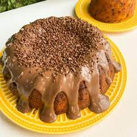

BOLO DE CENOURA FOFINHO

Ingredientes:
Voltar para o menu principal
- 2 xicara (chá) de cenoura picada
- 4 ovos
- 2 xicara (chá) açúcar
- 2 xicara (chá) de farinha de trigo
- 2 xicara (chá) de óleo
- 2 xicara (café) de fermeneto em pó
Cobertura:
- 1 lata de leite condensado
- 1 caixinha de creme de leite
- 2 colher chaia de margarina
- 3 colher cheias de chocolate em pó
Modo de preparo:
- Separe as claras das gemas
- bata as claras em neve e reserve.
- rgrrggrd
- dwdwgegtt
- Sdwdwdwdwdw
- dwdwdwd
Cobertura
wfwfgagjfwwfwaj
Fonte: https://www.todamateria.com.br/biologia